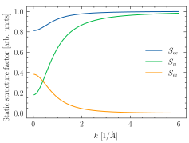
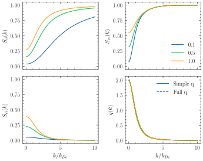

jaxrts.static_structure_factors.S_ei_AD
- jaxrts.static_structure_factors.S_ei_AD(k: Quantity, T_e: Quantity, T_i: Quantity, n_e: Quantity, m_i: Quantity, Z_f: float) Quantity[source]
The static electron-ion structure factor, in the approach by Arkhipov and Davletov [Arkhipov and Davletov, 1998], as presented by [Gregori et al., 2003] in equation (7).
The method is using the Random Phase Approximation, treating the problem semi-classically and uses a pseudopotential between charged particles to account for quantum diffraction effects and symmetry
While the seminal papers treated the electron- and ion temperature to be equal, we follow the work of [Gregori et al., 2006a] to allow for different temperatures of the two components. The results of [Arkhipov and Davletov, 1998] and [Gregori et al., 2003] can be obtained by setting
T_e == T_i- Parameters:
k (Quantity) – The scattering vector length (units of 1/[length])
T_e (Quantity) – The electron temperature in Kelvin. Use
T_cf_Greg()for the effective temperature used in [Gregori et al., 2003].T_i (Quantity) – The ion temperature in Kelvin.
n_e (Quantity) – The electron density in 1/[volume]
m_i (Quantity) – The mass of the ion
Z_f (float) – Number of free electrons per ion.
- Returns:
Quantity – Sei, the static electron ion structure factor.
Examples using jaxrts.static_structure_factors.S_ei_AD

Plot static structure Factors in the Approximation by Arkhipov and Devletov

Plot static structure factors in the Approximation by Gregori for T_i != T_e